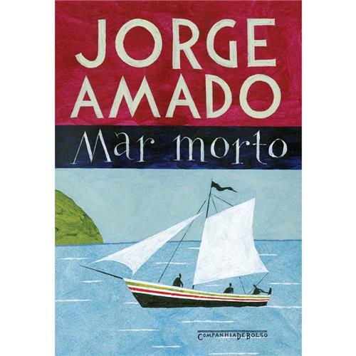

Morte e Destino
Os temas da morte e do destino estão entre os mais profundos e universais na literatura portuguesa, refletindo as inquietações humanas sobre a finitude da vida e as forças que governam o nosso caminho. Essas questões são frequentemente exploradas em diversas obras, revelando as ansiedades e as esperanças dos personagens.
Principais características do tema morte e destino
1. Reflexão sobre a finitude: A literatura aborda a morte como uma inevitabilidade, gerando reflexões sobre o que significa viver e o impacto da mortalidade nas escolhas dos indivíduos.
2. Destino como força inexorável: O destino é frequentemente apresentado como uma força que molda as vidas dos personagens, levantando questões sobre livre-arbítrio e a inevitabilidade de certos acontecimentos.
3. Simbolismo e alegoria: Muitas obras utilizam simbolismo e alegorias para discutir a morte e o destino, conferindo um caráter mais profundo e filosófico à narrativa.
4. Emoção e tragédia: Os temas estão frequentemente entrelaçados com emoções intensas, levando a situações trágicas que exploram a dor da perda e a aceitação da morte.
Contexto histórico
A presença da morte e do destino na literatura portuguesa pode ser vista ao longo de vários períodos, desde a literatura medieval, que frequentemente refletia sobre a vida e a morte, até o modernismo, onde a busca por sentido e a relação com a existência humana tornam-se centrais. As obras muitas vezes dialogam com os contextos sociais e políticos de cada época, refletindo as preocupações coletivas em relação à vida e ao futuro.
Obras e autores importantes
Fernando Pessoa: "O Banqueiro Anarquista"

Jorge Amado: "Mar Morto"
Conclusão
O tema da morte e do destino na literatura portuguesa provoca uma reflexão profunda sobre a condição humana. As obras que exploram esses temas revelam não apenas a fragilidade da vida, mas também a força do espírito humano em face da adversidade e da incerteza.
Através da literatura, questões existenciais são levantadas, permitindo que os leitores se conectem com suas próprias experiências de vida, morte e a busca por significado em um mundo repleto de incertezas.